|
THIS IS AN ARCHIVED SITE - ESTE ES UN SITIO ARCHIVADO |
|
Please visit
https://www.realde14.com for the current
site |
|
Visite
https://www.realde14.com para ver el sitio actual |
| Home |
Town |
Area |
History |
Links |
| 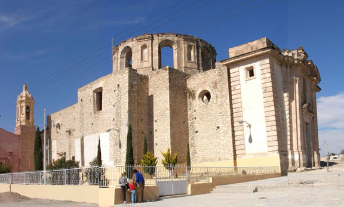 |
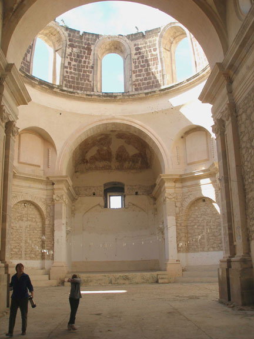 |
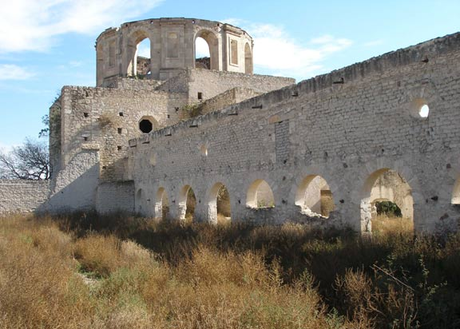 |
||
| The unfinished
church dominates the surounding village of Guaname. The view from the
rear shows the open yards that connect the church with the hacienda. |
||||
| 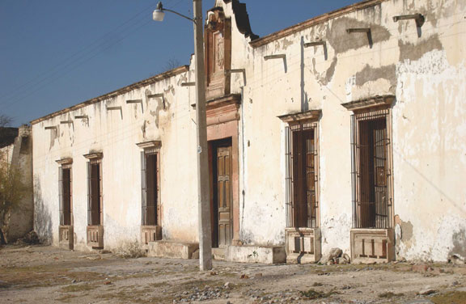 |
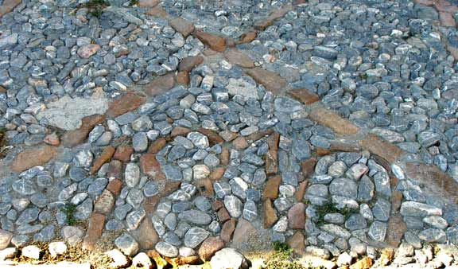 |
|
| The original
entrance to the hacienda is on the street on the left side of the
church. A date of 1810 is in the pebble stone yard of the stable. |
||
| 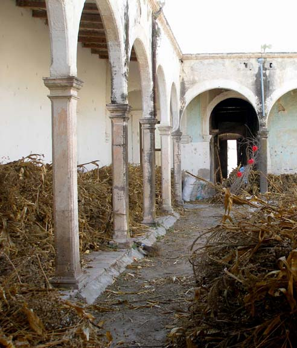 |
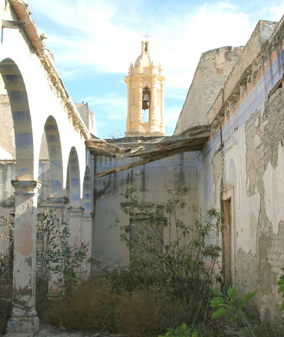 |
|
| The interior patios
of the hacienda are in a condition of neglect and ruin. Corn
stalks are stored under the porticos that are still roofed. In other
areas the roofs have collasped and the frescoed walls are weathering
away. |
||
| 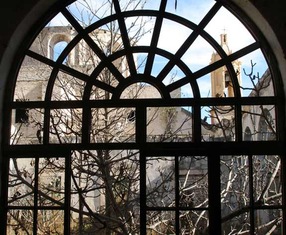 |
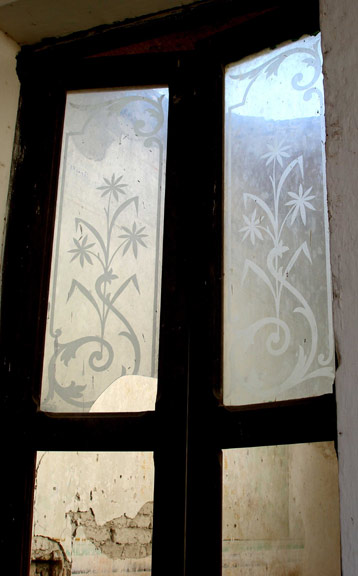 |
|
| The hacienda dining
room looked out into what is now a completely overgrown patio through
an intricate arched wooden framed window. Only one of the many rooms
has any original window glass. These are etched and possibly imported
from Europe in the XVIII century. The room beyound has lost its roof. |
||
| 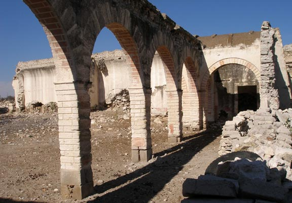 |
|
| The yards of the
hacienda where the livestock were handled, wagons loaded and unloaded,
and the shops for maintaining equipment were located are now in ruins. |
| 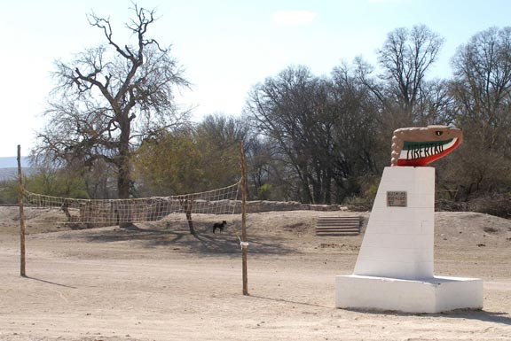 |
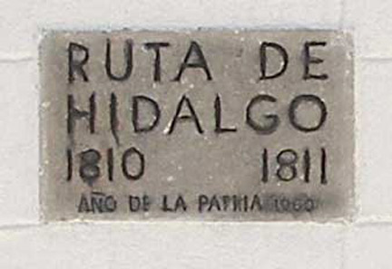 |
|
| Guaname was on the
route followed by Padre Hidalgo as he fled across northern Mexico at
the start of the War of Independence. These monuments are found at many
of the ex-haciendas and towns in the altiplano. |
||
| 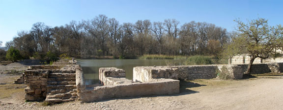 |
| This large tank
supplied the hacienda with water and its surrounding farm lands with
irrigation. Natural springs in the area supply the tank and water the
large area of bosque behind. The current ejido of Guaname still depends
on this water source. |